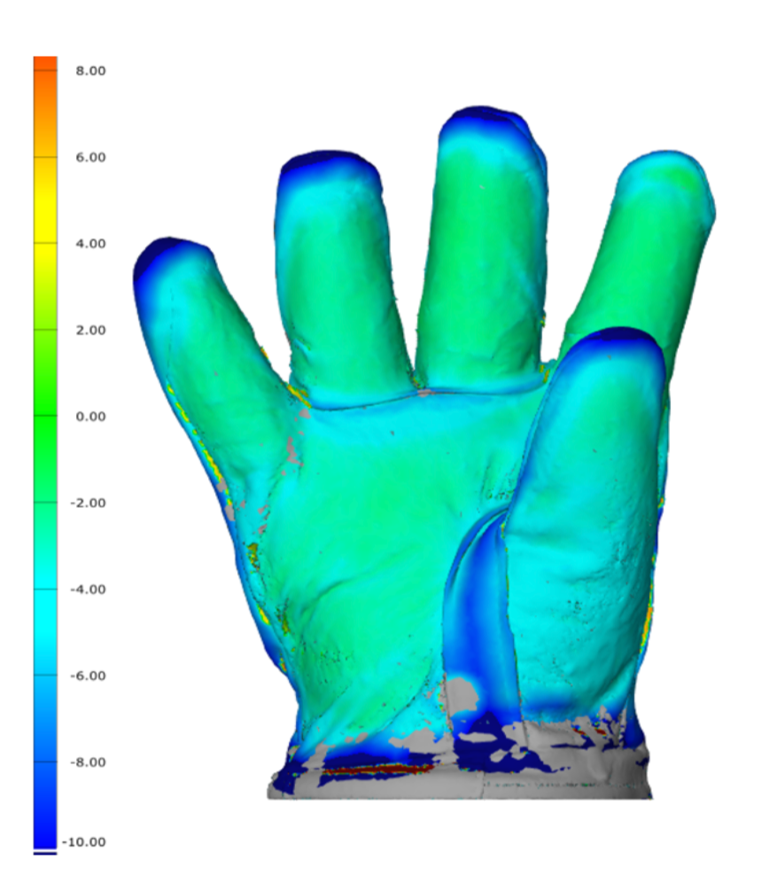

Published · ITAA Proceedings
Read the paper ↗
Quantifying the dimensional relationship between the interior and exterior of multi-layered protective gloves
Comparing 3D scans of firefighter glove layers showed the largest air gaps and misalignment at the fingertips and the web of the hand. Those are the same areas where dexterity loss matters most on the job.
Fingertipslargest layer gap
Web areakey misalignment